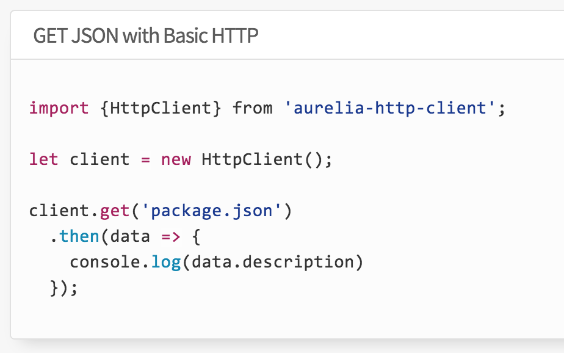

aurelia-client-http

This is a component in the Aurelia framework which delivers http client access. We will need some work on the server for it to be accessed from an aurelia client.
DonationService
The class can now be reimplemented to use the aureli-http-client. Existing data binding relationships should not need to be changed.